DNS：域名系统
Table of Contents
域名系统(DNS)是一种用于TCP/IP应用程序的分布式数据库，它提供主机名字和IP地址之间的转换及有关电子邮件的选路信息。这里提到的分布式是指在Internet上的单个站点不能拥有所有的信息。每个站点（如大学中的系、校园、公司或公司中的部门）保留它自己的信息数据库，并运行一个服务器程序供Internet上的其他系统（客户程序）查询。DNS提供了允许服务器和客户程序相互通信的协议
从应用的角度上看，对DNS的访问是通过一个地址解析器（resolver）来完成的。在Unix主机中，该解析器主要是通过两个库函数 gethostbyname(3) 和 gethostbyaddr(3) 来访问的，它们在编译应用程序时与应用程序连接在一起。前者接收主机名字返回IP地址，而后者接收IP地址来寻找主机名字。解析器通过一个或多个名字服务器来完成这种相互转换
图4-2中指出了解析器通常是应用程序的一部分。解析器并不像TCP/IP协议那样是操作系统的内核。该图指出的另一个基本概念就是：在一个应用程序请求TCP打开一个连接或使用UDP发送一个数据报之前。心须将一个主机名转换为一个IP地址。操作系统内核中的TCP/IP协议族对于DNS一点都不知道
本章将了解地址解析器如何使用TCP/IP协议（主要是UDP）与名字服务器通信。不介绍运行名字服务器或有关可选参数的细节，这些技术细节的内容可以覆盖整整一本书
RFC 1034说明了DNS的概念和功能，RFC 1035详细说明了DNS的规范和实现。DNS最常用的版本（包括解析器和名字服务器）是BIND(伯克利Internet域名服务器)。该服务器称作named
DNS协议
基础
DNS的名字空间和Unix的文件系统相似，也具有层次结构。图14-1显示了这种层次的组织形式：
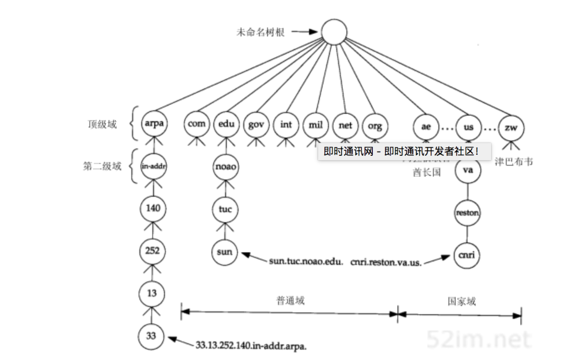
每个结点（图中的圆圈）有一个至多63个字符长的标识 这颗树的树根是没有任何标识的特殊结点 命名标识中一律不区分大写和小写 命名树上任何一个结点的域名就是将从该结点到最高层的域名串连起来，中间使用一个点'.'分隔这些域名 注意这和Unix文件系统路径的形成不同，文件路径是由树根依次向下的形成的 域名树中的每个结点必须有一个唯一的域名，但域名树中的不同结点可使用相同的标识
以点'.'结尾的域名称为绝对域名或完全合格的域名FQDN，例如 sun.tuc.noao.edu. 。如果一个域名不以点结尾，则认为该域名是不完全的
如何使域名完整依赖于使用的DNS软件：
- 如果不完整的域名由两个或两个以上的标号组成，则认为它是完整的
- 或者在该域名的右边加入一个局部后缀，例如域名sun通过加上局部后缀.tuc.noao.edu.成为完整的
顶级域名
顶级域名被分为三个部分： 1：arpa是一个用作地址到名字转换的特殊域 2：7个3字符长的普通域。有些书也将这些域称为组织域 3：所有2字符长的域均是基于ISO3166中定义的国家代码，这些域被称为国家域或地理域
下表列出了7个普通域的正式划分：
| 域 | 描述 |
| com | 商业组织 |
| edu | 教育机构 |
| gov | 其他美国政府部门 |
| int | 国际组织 |
| mil | 美国军事网点 |
| net | 网络 |
| org | 其他组织 |
在DNS中，通常认为3字符长的普通域仅用于美国的组织机构，2字符长的国家域则用国际组织美国军事网点于每个国家，但情况并不总是这样。许多非美国的组织机构仍然使用普通域，而一些美国的其他组织组织机构也使用.us的国家域（RFC 1480 详细描述了.us域）。普通域中只有 .gov 和 .mil 域局限于美国
许多国家将它们的二级域组织成类似于普通域的结构：例如，.ac.uk是英国研究机构的二级域名，.co.uk则是英国商业机构的二级域名
域名授权
DNS的一个没在如图14-1中表示出来的重要特征是 DNS中域名的授权 。没有哪个机构来管理域名树中的每个标识，相反，只有一个机构，即 网络信息中心NIC 负责分配顶级域和委派其他指定地区域的授权机构
一个独立管理的DNS子树称为一个区域。一个常见的区域是一个二级域，如noao.edu。许多二级域将它们的区域划分成更小的区域。例如，大学可能根据不同的系来划分区域，公司可能根据不同的部门来划分区域
一旦一个区域的授权机构被委派后，由它负责向该区域提供多个名字服务器。当一个新系统加入到一个区域中时，该区域的DNS管理者为该新系统申请一个域名和一个IP地址，并将它们加到名字服务器的数据库中。这就是授权机构存在的必要性。例如，在一个小规模的大学，一个人就能完成每次新系统的加入。但对一个规模较大的大学来说，这一工作必须被专门委派的机构（可能是系统）来完成，因为一个人已无法维持这一工作
一个名字服务器负责一个或多个区域。一个区域的管理者必须为该区域提供一个主名字服务器和至少一个辅助名字服务器。主、辅名字服务器必须是独立和冗余的，以便当某个名字服务器发生故障时不会影响该区域的名字服务
主、辅名字服务器的主要区别在于主名字服务器从磁盘文件中调入该区域的所有信息，而辅名字服务器则从主服务器调入所有信息。我们将辅名字服务器从主服务器调入信息称为 区域传送
当一个新主机加入一个区域时，区域管理者将适当的信息（最少包括名字和IP地址）加入到运行在主名字服务器上的一个磁盘文件中，然后通知主名字服务器重新调入它的配置文件。辅名字服务器定时（通常是每隔3小时）向主名字服务器询问是否有新数据。如果有新数据，则通过区域传送方式获得新数据
当一个名字服务器没有请求的信息时，它将如何处理？它必须与其他的名字服务器联系，这正是DNS的分布特性。然而，并不是每个名字服务器都知道如何同其他名字服务器联系。相反，每个名字服务器必须知道如何同根的名字服务器联系。1993年4月时有8个根名字服务器，所有的主名字服务器都必须知道根服务器的IP地址（ 这些IP地址在主名字服务器的配置文件中，主服务器必须知道根服务器的IP地址，而不是它们的域名 ）。根服务器则知道所有二级域中的每个授权名字服务器的名字和位置（即IP地址）。这意味着这样一个反复的过程：正在处理请求的名字服务器与根服务器联系，根服务器告诉它与另一个名字服务器联系
可以通过匿名的FTP获取当前的根服务器清单。具体是从ftp.rs.internic.net或nic.ddn.mil获取文件netinfo/root-servers.txt
DNS的一个基本特性是 使用超高速缓存 。即当一个名字服务器收到有关映射的信息（主机名字到IP地址）时，它会将该信息存放在高速缓存中。这样若以后遇到相同的映射请求，就能直接使用缓存中的结果而无需通过其他服务器查询
报文
DNS定义了一个用于查询和响应的报文格式。图14-3显示这个报文的总体格式：
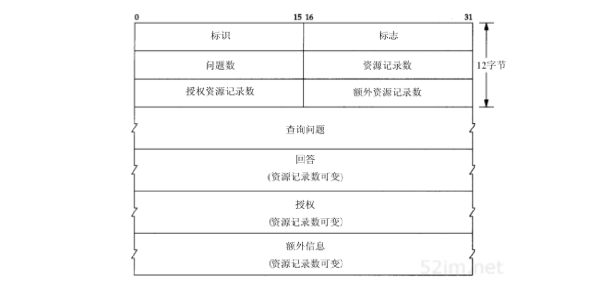
这个报文由12字节长的首部和4个长度可变的字段组成
标识字段
标识字段由客户程序设置并由服务器返回结果，客户程序通过它来确定响应与查询是否匹配
标志字段
16bit的标志字段被划分为若干子字段，如图14-4所示：
- QR：1bit
- 0：查询报文
- 1：响应报文
- opcode：4bit
- 0：标准查询
- 1：反向查询
- 2：服务器状态请求
- AA：1bit标志，表示 授权回答 。该名字服务器是授权于该域的
- TC：1bit字段，表示 可截断的 。使用UDP时，它表示当应答的总长度超过512字节时，只返回前512个字节
- RD：1bit字段，表示 期望递归 。该比特能在一个查询中设置，并在响应中返回。这个标志告诉名字服务器必须处理这个查询，也称为一个递归查询。如果该位为0，且被请求的名字服务器没有一个授权回答，它就返回一个能解答该查询的其他名字服务器列表，这称为迭代查询
- RA：1bit字段，表示 可用递归 。如果名字服务器支持递归查询，则在响应中将该比特设置为1
- 随后的3bit字段必须为0
- rcode：4bit的返回码字段
- 0：没有差错
- 3：名字差错，名字差错只有从一个授权名字服务器上返回，它表示在查询中制定的域名不存在
查询条目数
这4个16bit字段说明最后4个变长字段中包含的条目数：
- 查询报文：问题数通常是1，而其他3项则均为0
- 应答报文：回答数至少是1，剩下的两项可以是0或非0
查询报文中的问题
问题部分中每个问题的格式如图14-5所示，通常只有一个问题：
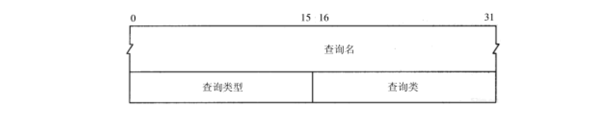
查询名
查询名是要查找的名字，它是一个或多个标识符的序列。每个标识符以首字节的计数值来说明随后标识符的字节长度，每个名字以最后字节为0结束，长度为0的标识符是根标识符。计数字节的值必须是0~63的数，因为标识符的最大长度仅为63（在本节的后面我们将看到计数字节的最高两比特为1，即值192~255，将用于压缩格式）
不像我们已经看到的许多其他报文格式，该字段无需以整32bit边界结束，即无需填充字节。图14-6显示了如何存储域名gemini.tuc.noao.edu：
查询类型
每个问题有一个查询类型，而每个响应也有一个类型。大约有20个不同的类型值，其中的一些目前已经过时。图14-7显示了其中的一些值。查询类型是类型的一个超集，图中显示的类型值中只有两个能用于查询类型：
| 名字 | 数值 | 描述 | 类型 | 查询类型 |
| A | 1 | IP地址 | • | • |
| NS | 2 | 名字服务器 | • | • |
| CNAME | 5 | 规范名称 | • | • |
| PTR | 12 | 指针记录 | • | • |
| HINFO | 13 | 主机信息 | • | • |
| MX | 15 | 邮件交换记录 | • | • |
| AXFR | 252 | 对区域转换的请求 | • | |
| *或ANY | 255 | 对所有记录的请求 | • |
- 最常用的查询类型是A类型，表示期望获得查询名的IP地址
- 一个PTR查询则请求获得一个IP地址对应的域名。这是一个指针查询
查询类
查询类通常是1，指互联网地址（某些站点也支持其他非IP地址）
响应报文中的资源记录
DNS报文中最后的三个字段，回答字段、授权字段和附加信息字段，均采用一种称为资源记录RR的相同格式。图14-8显示了资源记录的格式：
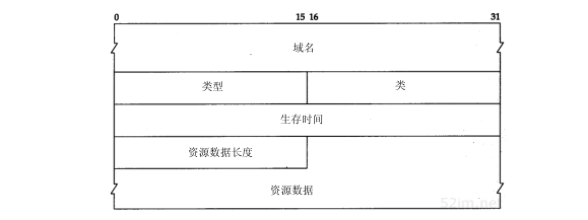
- 域名是记录中资源数据对应的名字。它的格式和前面介绍的查询名字段格式相同
- 类型说明RR的类型码。它的值和前面介绍的查询类型值是一样的。类通常为1，指Internet数据
- 生存时间字段是客户程序保留该资源记录的秒数。资源记录通常的生存时间值为2天
- 资源数据长度说明资源数据的数量。该数据的格式依赖于类型字段的值。 对于类型1（A记录）资源数据是4字节的IP地址
简单实例
从一个简单的例子来了解一个名字解析器与一个名字服务器之间的通信过程。在sun主机上运行Telnet客户程序远程登录到gemini主机上，并连接daytime服务器：
在这个例子中，引导sun主机（运行Telnet客户程序）上的名字解析器来使用位于noao.edu（140.252.1.54）的名字服务器。图14-9显示了这三个系统的排列情况：
和以前提到的一样，名字解析器是客户程序的一部分，并且在Telnet客户程序与daytime服务器建立TCP连接之前，名字解析器就能通过名字服务器获取IP地址
sun主机上的文件/etc/resolv.conf将告诉名字解析器作什么：
sun % cat /etc/resolv.conf nameserver 140.252.1.54 domain tuc.noao.edu
- 第1行给出名字服务器(主机noao.edu的IP地址)，最多可说明3个名字服务器行来提供足够的后备以防名字服务器故障或不可达
- 域名行说明默认域名。如果要查找的域名不是一个完全合格的域名（没有以句点结束），那末默认的域名.tuc.noao.edu将加到待查名后
图14-10显示了名字解析器与名字服务器之间的分组交换：
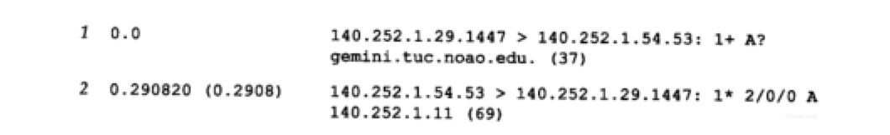
让tcpdump程序不再显示每个IP数据报的源地址和目的地址。相反，它显示客户的IP地址140.252.1.29和名字服务器的IP地址140.252.1.54。客户的临时端口号为1447，而名字服务器则使用熟知端口53。如果让tcpdump程序显示名字而不是IP地址，它可能会和同一个名字服务器联系（作指示查询），以致产生混乱的输出结果：
- 第1行中显示的是查询报文：
- 1+ ：
- 1: 标识字段
- + ：RD标志（期望递归）为1。默认情况下，名字解析器要求递归查询方式
- A? ：
- A：查询类型为A（需要一个IP地址）
- ?：指明它是一个查询（不是一个响应）
- gemini.tuc.noao.edu.：待查名字，名字解析器在待查名字后加上句点号指明它是一个绝对字段名
- 37：在UDP数据报中的用户数据长度字节数
- 12字节：为固定长度的报文首部
- 21字节：查询名字
- 4字节：查询类型和查询类，在DNS报文中无需填充数据。
- 1+ ：
- 第2行：显示的是从名字服务器发回的响应
- 1* :
- 1：标识字段
- *：设置AA标志（授权回答）（该服务器是noao.edu域的主域名服务器，其回答在该域内是可相信的）
- 2/0/0：在响应报文中最后3个变长字段的资源记录数
- 2：回答RR数
- 0：授权RR数
- 0：附加信息RR数
- A：回答类型，IP地址
- 140.252.1.11：tcpdump仅显示第一个回答
- 1* :
为什么我们的查询会得到两个回答？ 这是因为gemini是多接口主机，因此得到两个IP地址。事实上，另一个有用的DNS工具是一个称为host的公开程序，它能将查询传递给名字服务器，并显示返回的结果。如果使用这个程序，就能看到这个多地址主机的两个IP地址：
sun$ host gemini
gemini.tuc.noao.edu A 140.252.1.11 gemini.tuc.noao.edu A 140.252.3.54
图14-10中的第一个回答与host命令的第一行输出均是在同一子网（140.252.1）的IP地址。这不是偶然的。 如果名字服务器和发出请求的主机位于相同的网络（或子网），那么BIND会排列显示的结果以便在相同网络的地址优先显示
还可以使用其他的地址来访问gemini主机，但它可能不太有效 在这个例子中，使用traceroute显示出从子网140.252.1到140.252.3的正常路由不经过gemini主机，而是经过连接这两个网络的另一个路由器。因此在这种情况下，如果通过其他的IP地址（140.252.3.54）来访问gemini主机，所有分组均需经过额外的一跳 还有其他一些程序能很容易地对DNS进行交互访问： nslookup是大多数DNS实现中包含的程序 dig程序是另一个查询DNS服务器的公开工具 doc是一个使用dig的外壳脚本程序，它能向合适的名字服务器发送查询来诊断含义不清的域名，并对返回的查询结果进行简单的分析
资源记录压缩
在查询结果中的UDP数据长度：69字节。为说明这些字节需要知道以下两点：
- 在返回的结果中包含查询问题
- 在返回的结果中会有许多重复的域名，因此使用压缩方式。在这个例子中，域名gemini.tuc.noao.edu出现了三次
压缩方法很简单：
当一个域名中的标识符是压缩的，它的单计数字节（范围由0～63）中的最高两位将被设置为11 这表示它是一个16bit指针而不再是8bit的计数字节 指针中的剩下14bit说明在该DNS报文中标识符所在的位置（起始位置由标识字段的第一字节起算） 只要一个标识符是压缩的，就可以使用这种指针，而不一定非要一个完整的域名压缩时才能使用 因为一个指针可能指向一个完整的域名，也可能只指向域名的结尾部分（这是因为给定域名的结尾标识符是相同的）
图14-11显示了对应于第2行的DNS应答的格式：
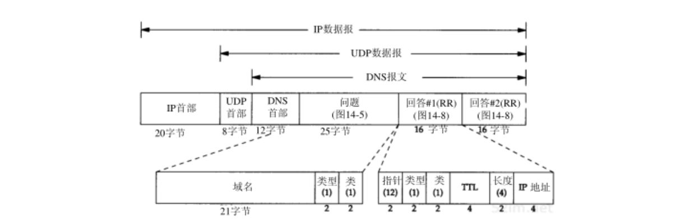
图中也显示了IP首部和UDP首部来重申DNS报文被封装在UDP数据报中。还明确显示了在问题部分的域名中各标识符的计数字节。返回的两个回答除了返回的IP地址不同外，其余都是一样的。在这个例子中，每个回答中的指针值为12，表示从DNS首部开始的偏移量
FQDN
sun % telnet gemini daytime #我们只键入 gemini Trying 140.252.1.11 ... Connected to gemini.tuc.noao.edu. #但Telnet客户输出FQDN
仅仅输入了主机名(gemini)而不是FQDN，但Telnet客户程序部输出了FQDN。这是由于Telnet程序通过调用名字解析器（gethostbyname）对输入的名字进行查询，返回的结果包括IP地址和FQDN。Telnet程序就输出它试图与之建立TCP连接的IP地址，当连接建立后，它就输出FQDN
如果在输入Telnet命令后间隔很长时间才显示IP地址，这个时延是由名字解析器和名字服务器在由域名到IP地址的解析所引起的。而显示Trying到显示Connectedto的时延则是由客户与服务器建立TCP连接所引起的，与DNS无关
指针查询
DNS中一直难于理解的部分就是指针查询方式，即 给定一个IP地址，返回与该地址对应的域名
首先回到图14-1，查看一下顶级域arpa，及它下面的in-addr域。当一个组织加入Internet，并获得DNS域名空间的授权，如noao.edu，则它们也获得了对应IP地址的 in-addr.arpa域名空间的授权 。在noao.edu这个例子中，它是网络号为140.252的B类网络。在DNS树中结点in-addr.arpa的下一级必须是该IP地址的第一字节（例中为140），再下一级为该IP地址的下一个字节（252），依此类推。但应牢记的是 DNS名字是由DNS树的底部逐步向上书写的 。这意味着对于IP地址为140.252.13.33的sun主机，它的DNS名字为 33.13.252.140.in-addr.arpa
必须写出4字节的IP地址，因为授权的代表是基于网络号：A类地址是第一字节，B类地址是第一、二字节，C类地址则是第一、二、三字节。 IP地址的第一字节一定位于in-addr的下一级，但FQDN却是自树底往上书写的 。如果FQDN由顶往下书写，则这个IP地址的DNS名字将是arpa.in-addr.140.252.13.33，而它所对应的域名将是edu.noao.tuc.sun。
如果DNS树中没有独立的分支来处理这种地址与名字的转换，将无法进行这种反向转换，除非从树根开始依次尝试每个顶级域。毫不夸张地说，这将需要数天或数周的时间。虽然反写IP地址和特殊的域名会造成某些混乱，但in-addr解决方案仍是一种最有效的方式
只有在使用host程序或tcpdump程序直接同DNS打交道时，才会担心in-addr域和反写IP地址影响。从应用的角度上看，正常的名字解析器函数（gethostbyaddr）将接收一个IP地址并返回对应主机的有关信息。反转这些字节和添加in-addr.arpa域均由该函数自动完成
实例
使用host程序完成一个指针查询，并使用tcpdump程序来观察这些分组。例子中的设置和图14-9相同，在sun主机上运行host程序，名字服务器在主机noao.edu上。我们指明svr4主机的IP地址：
sun$ host 140.252.13.34
Name: svr4.tuc.noao.edu Address: 140.252.13.34
既然IP地址是仅有的命令行参数，host程序将自动产生指针查询。图14-12显示了tcpdump的输出：
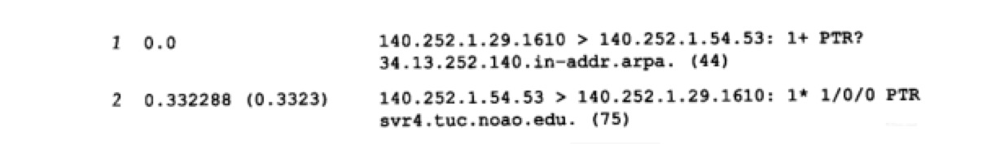
- 第1行显示标识符为1，期望递归标志设置为 1+ ，查询类型为PTR（ ? 表示它是一个查询而不是响应）。44字节的数据包括12字节的DNS报文首部、28字节的域名标识符和4字节的查询类型和查询类
- 查询结果包含一个回答RR，且为授权回答比特置 1* 。RR的类型是PTR，资源数据中包含该域名
- 从名字解析器传递给名字服务器的指针查询不再是32bit的IP地址，而是域名 34.13.252.140.in-addr.arpa
主机名检查
当一个IP数据报到达一个作为服务器的主机时，无论是UDP数据报还是TCP连接请求，服务器进程所能获得的是客户的IP地址和端口号（UDP或TCP）。某些服务器需要客户的IP地址来获得在DNS中的指针记录
其他的一些服务器如Rlogin服务器不但需要客户的IP地址来获得指针记录，还要向DNS询问该IP地址所对应的域名，并检查返回的地址中是否有地址与收到的数据报中的源IP地址匹配。该检查是因为.rhosts文件中的条目仅包含主机名，而没有IP地址，因此主机需要证实该主机名是否对应源IP地址
gethostbyaddr函数
某些厂商将该项检查自动并入其名字解析器的例程中，特别是函数gethostbyaddr。这使得任何使用名字解析器的程序均可获得这种检查，而无需在应用中人为地进行这项检查
来看一个使用SunOS 4.13名字解析器库的例子。可以编制一个简单的程序通过调用函数gethostbyaddr来完成一个指针查询。在文件/etc/resolv.conf中将名字服务器设置为noao.edu，sun主机通过SLIP链路与它相连。图14-13显示了当调用函数gethostbyaddr获取与IP地址140.252.1.29（sun主机）对应的名字时，tcpdump在SLIP链路上收到的内容：
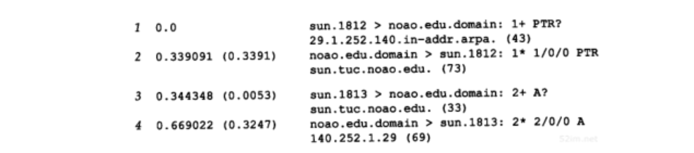
- 第1行是预期的指针查询
- 第2行是预期的响应
- 第3行显示了该名字解析器函数自动对第2行返回的名字发出一个IP地址查询
- 既然sun主机有两个IP地址，第4行的响应就包括两个回答记录
如果这两个地址中没有与gethostbyaddr输入参数匹配的地址，函数会向系统的日志发送一条报文，并向应用程序返回差错
资源记录
至今已经见到了一些不同类型的资源记录（RR）：IP地址查询为A类型，指针查询为类型PTR。也已看到了由名字服务器返回的资源记录：回答RR、授权RR和附加信息RR。现有大约20种不同类型的资源记录，下面将介绍其中的一些。另外，随着时间的推移，会加入更多类型的RR
A记录
一个A记录定义了一个IP地址，它存储32bit的二进制数
PTR记录
指针记录用于指针查询。IP地址被看作是in-addr.arpa域下的一个域名(标识符串)
CNAME记录
CNAME表示 规范名字(canonicalname) 。它用来表示一个域名(标识符串)，而有规范名字的域名通常被称为别名
某些FTP服务器使用它向其他的系统提供一个易于记忆的别名，例如，gated服务器可通过匿名FTP从 gated.cornell.edu 获得，但这里并没有叫做gated的系统，这仅是为其他系统提供的别名。其他系统的规范名为gated.cornell.edu
sun$ host -t cname gated.cornell.edu
gated.cornell.edu CNAM COMET.CIT.CORNELL.EDU
这里使用的 -t 选项来指明它是特定的查询类型
HINFO记录
HINFO表示主机信息：包括说明主机CPU和操作系统的两个字符串。并非所有的站点均提供它们系统的HINFO记录，并且提供的信息也可能不是最新的
sun$ host -t hinfo sun
sun.tuc.noao.edu HINFO Sun-4/25 Sun4.1.3
MX记录
邮件交换记录，用于以下一些场合：
- 一个没有连到Internet的站点能将一个连到Internet的站点作为它的邮件交换器。这两个站点能够用一种交替的方式交换到达的邮件，而通常使用的协议是UUCP协议
- MX记录提供了一种将无法到达其目的主机的邮件传送到一个替代主机的方式
- MX记录允许机构提供供他人发送邮件的虚拟主机，如cs.university.edu，即使这样的主机名根本不存在
- 防火墙网关能使用MX记录来限制外界与内部系统的连接
许多不能与Internet连接的站点通过UUCP链路与一个连接在Internet上的站点如UUNET相连接。通过MX记录能使用user@host这种邮件地址向那个站点发送电子邮件。例如，一个假想的域foo.com可能有下面的MX记录：
sun$ host -t mx foo.com
foo.com MX relay1.UU.NET foo.com MX relay2.UU.NET
NS记录
名字服务器记录。它说明一个域的授权名字服务器。它由域名表示(符号串)
这些是RR的常用类型。将在后面的例子中遇到它们
高速缓存
为了减少Internet上DNS的通信量，所有的名字服务器均使用高速缓存。在标准的Unix实现中，高速缓存是由 名字服务器而不是由名字解析器维护的 。既然名字解析器作为每个应用的一部分，而应用又不可能总处于工作状态，因此将高速缓存放在只要系统（名字服务器）处于工作状态就能起作用的程序中显得很重要。这样任何一个使用名字服务器的应用均可获得高速缓存。在该站点使用这个名字服务器的任何其他主机也能共享服务器的高速缓存
实例1
在迄今为止所举例子的网络环境中，在sun主机上运行客户程序，通过主机noao.edu的SLIP链路访问名字服务器。现在将改变这种设置，在sun主机上运行名字服务器。在这种情况下，如果使用tcpdump监视在SLIP链路上的DNS通信量，将只能看到服务器因超出其高速缓存而不能处理的查询
在默认情况下，名字解析器将在本地主机上（UDP端口号为53或TCP端口号为53）寻找名字服务器。从名字解析器文件中删除nameserver行，而留下domain行：
sun$ cat /etc/resolv.conf
domain tuc.noao.edu
在这个文件中缺少namerserver指示将导致名字解析器使用本地主机上的名字服务器：
sun$ host ftp.uu.net
ftp.uu.net A 192.48.96.9
下图显示了这个查询的tcpdump输出结果：
在tcpdump中使用了新的选项:
使用-w选项来收集进出UDP或TCP 53号端口的所有数据。将这些原始数据记录在一个文件中供以后处理，同时防止tcpdump试图调用名字解析器来显示与那个IP地址相对应的域名
执行查询后，终止tcpdump并使用-r选项再次运行它。它会读取含有原始数据的文件并产生正式的输出显示。这个过程要花费几秒钟，因为tcpdump调用了它自己的名字解析器
标识符是小整数（2和3）。这是因为我们关闭这个名字服务器，后又重新启动它来强制清空它的高速缓存。当名字服务器启动时，它将标识符初始化为1
- 第一行：查询主机ftp.uu.net的IP地址，该名字服务器就同8个根名字服务器中的一个 ns.nic.ddn.mil 取得联系。这是以前见到的正常的A类型查询：
- 它的期望递归表示没有说明（不是 2+ , 而是 2? ）。在以前的例子中，经常看到名字解析器设置期望递归标志，但这里的名字服务器在与某个根服务器联系时没有设置这个标志。这是因为 不应该向根名字服务器发出期望递归的查询，它们仅用来寻找其他授权名字服务器的地址
- 第2行：返回的响应中没有回答资源记录，而包含5个授权资源记录和5个附加信息资源记录：
- 2- ：期望递归标志（RA）没有被设置。即使要求进行递归查询，这个根名字服务器也不会回答期望递归查询
尽管tcpdump没有显示返回的10个资源记录，也能执行host命令来查看高速缓存的内容：
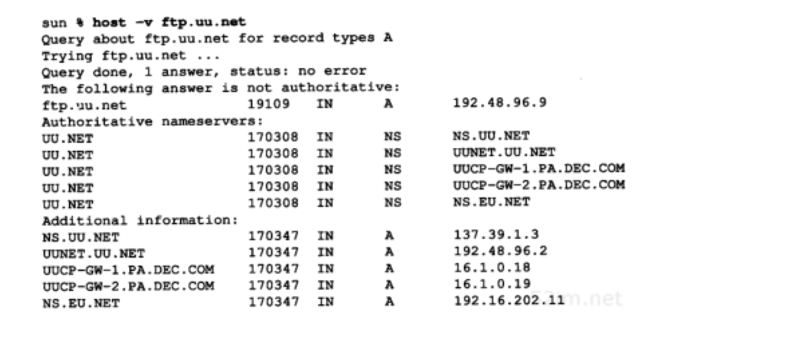
这次采用-v选项查看的不仅仅只是A记录。它显示出对于域uu.net有5个授权名字服务器，而由根名字服务器返回的5个附加信息资源记录中含有这5个名字服务器的IP地址 这避免了在查找其中的某个名字服务器的地址时，无需再次与根名字服务器联系。这是DNS中的另一个实现优化 host命令指出这个回答不是授权的，这是因为这个回答来自名字服务器的高速缓存，而不是来自授权名字服务器
- 第3行：名字服务器与第一个授权名字服务器 ns.uu.net 询问ftp.uu.net的IP地址
- 这次设置了期望递归标志
- 第4行：返回的应答包含一个回答资源记录
而后我们再次执行host命令，询问相同的名字，这次tcpdump没有输出，这正是所期望的，因为由host命令返回的回答来自于 名字服务器的高速缓存
实例2
再次执行host命令，查找ftp.ee.lbl.gov的地址：
sun$ host ftp.ee.lbl.gov
ftp.ee.lbl.gov CNAME ee.lbl.gov ee.lbl.gov A 128.3.112.20
图14-15显示了这时的tcpdump输出：
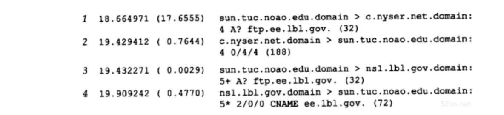
- 第1行：服务器与另一个根名字服务器 c.nyser.net 联系。一个名字服务器通常轮询不同的根名字服务器来获得往返时间估计，然后选择往返时间最小的服务器
- 向一个根服务器发出查询，那么期望递归标志不应被设置
- 第2行：返回的响应中不包含回答资源记录，但含有4个授权记录和4个附加信息资源记录。这4个授权资源记录是供主机ftp.ee.lbl.gov进行域名服务的名字服务器名，其他4个记录则是这4个服务器的IP地址
- 第3行：向名字服务器nsl.lbl.gov发出的查询请求
- 它的期望递归标志是被设置的
- 第4行：返回的响应和以往的响应不同。返回了两个回答资源记录：
- tcpdump指出其中的第一个是CNAME资源记录，ftp.ee.lbl.gov的规范名称是ee.lbl.gov
这是CNAME记录常见的用法： LBL的FTP站点的名字通常是以ftp开始的，但它可能不时地从一个主机移到另一个主机 用户只需要知道ftp.ee.lbl.gov，必要时DNS会用它的规范名进行替换
运行host程序时，它显示了规范域名的CNAME和IP地址。这是因为响应中含有两个回答资源记录：
- CNAME
- A记录
如果A记录没有随CNAME记录返回，服务器将发出另一个查询请求，询问ee.lbl.gov的IP地址。这是另一个DNS的实现优化： 在一个响应中同时返回一个规范域名的CNAME记录和A记录
用UDP还是用TCP
DNS名字服务器使用的熟知端口号无论对UDP还是TCP都是53。这意味着DNS均支持UDP和TCP访问，但我们使用tcpdump观察的所有例子都是采用UDP：
- 当名字解析器发出一个查询请求，并且返回响应中的TC（删减标志）比特被设置为1时，它就意味着响应的长度超过了512个字节，而仅返回前512个字节。在遇到这种情况时，名字解析器通常使用TCP重发原来的查询请求，它将允许返回的响应超过512个字节。既然TCP能将用户的数据流分为一些报文段，它就能用多个报文段来传送任意长度的用户数据
- 当一个域的辅助名字服务器在启动时，将从该域的主名字服务器执行区域传送。辅助服务器将定时（通常是3小时）向主服务器进行查询以便了解主服务器数据是否发生变动。如果有变动，将执行一次区域传送。区域传送将使用TCP，因为这里传送的数据远比一个查询或响应多得多
既然DNS主要使用UDP，无论是名字解析器还是名字服务器都必须自己处理超时和重传。此外，不像其他的使用UDP的Internet应用，大部分操作集中在局域网上，DNS查询和响应通常经过广域网。分组丢失率和往返时间的不确定性在广域网上比局域网上更大。这样对于DNS客户程序，一个好的重传和超时程序就显得更重要了
总结
通过一个例子将已经介绍的许多DNS特性作一个综合性回顾。先启动Rlogin客户程序，然后连接到一个位于其他域的Rlogin服务器。图14-16显示了发生的分组交换过程：
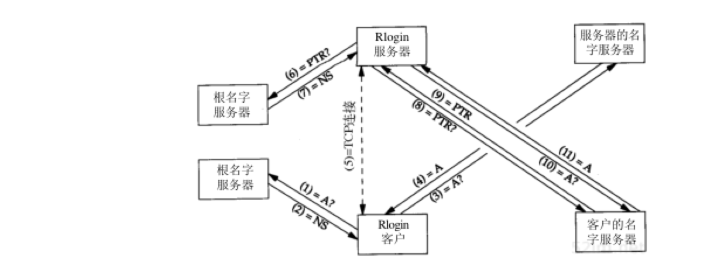
假定客户和服务器的高速缓存中没有任何信息：
- 客户程序启动后，调用它的名字解析器函数将键入的主机名转换为一个IP地址。一个A类型的查询请求被送往一个根服务器
- 由根服务器返回的响应中包含为该服务器所在域服务的名字服务器名
- 客户端的名字解析器将向该服务器的名字服务器重发上述A类型查询，这个查询通常是将期望递归标志设置为1
- 返回的应答中包含Rlogin服务器的IP地址
- Rlogin客户和Rlogin服务器建立一个TCP连接。客户和服务器的TCP模块间将交换3个分组
- Rlogin服务器收到来自客户的连接请求后，调用它的名字解析器通过TCP连接请求中的IP地址获得客户主机名
- 这是一个PTR查询请求，由一个根名字服务器处理。这个根名字服务器可以不同于步骤1中客户使用的根名字服务器
- 这个根名字服务器的响应中含有为客户的in-addr.arpa域的名字服务器
- 服务器上的名字解析器将向客户的名字服务器重传上述PTR查询
- 返回的PTR应答中含有客户主机的FQDN
- 服务器的名字解析器向客户的名字服务器发送一个A类型查询请求，查找前一步返回的名字对应的IP地址
- 这可能由服务器中的gethostbyaddr函数自动完成，否则Rlogin服务器将完成这一步
- 客户的名字服务器常常就是客户的in-addr.arpa名字服务器，但这不是必需的
- 从客户的名字服务器返回的响应含有客户主机的A记录。Rlogin服务器将客户的TCP连接请求中的IP地址与A记录作比较
高速缓存将减少这个图中交换的分组数目